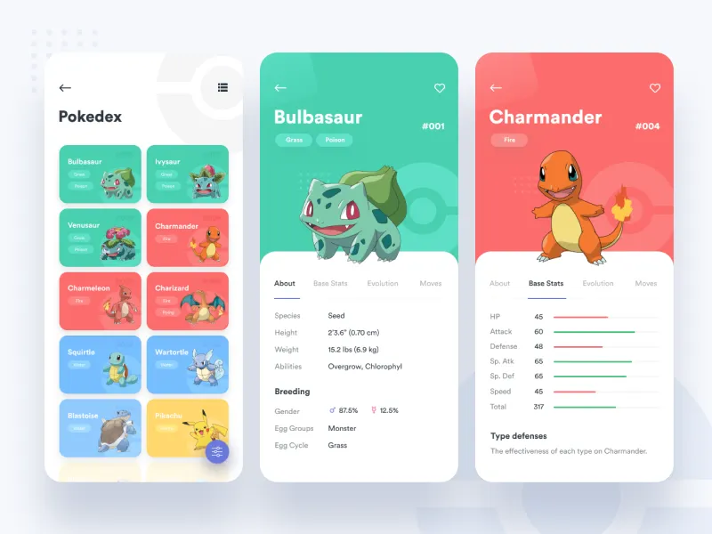
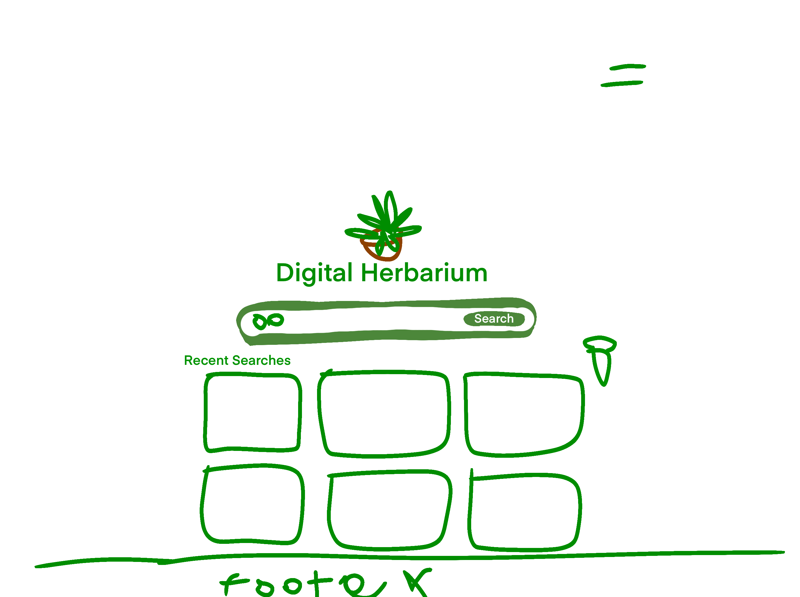
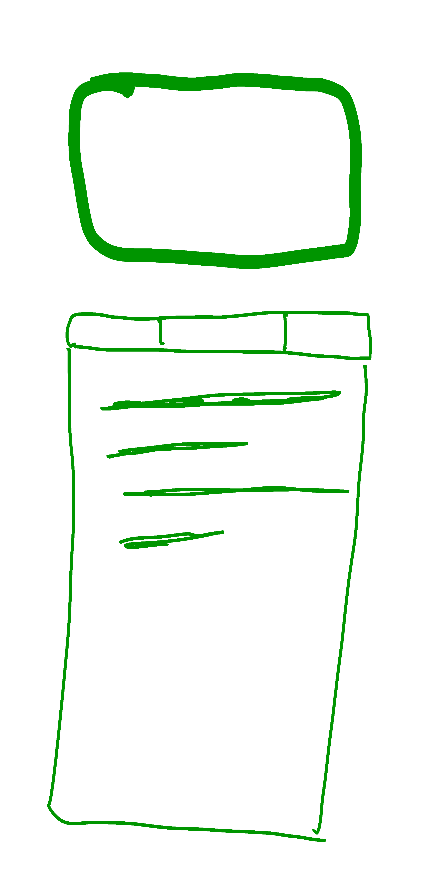
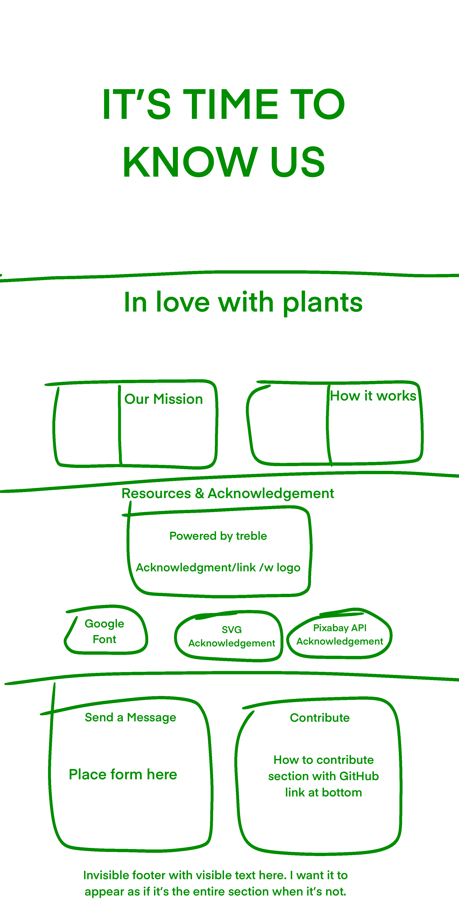

Digital Herbarium
Site Name: Digital Herbarium
Description: This project is inspired by the concept of a Pokédex, but for plants. It serves as a dynamic, interactive encyclopedia for plant enthusiasts, allowing users to search, discover, and learn about common and scientific plant information. The idea merges my personal passion for plants with technical web development skills, focusing on API integration and user-friendly data mapping.
Project Concept & Reason
The Digital Herbarium is designed as a personal, searchable encyclopedia for indoor and outdoor plants. Users can search by common name, which is mapped to scientific names using a local CSV file. The site fetches detailed botanical data from the Trefle.io API and displays it in a visually rich card, similar to a Pokédex entry. This project combines my interest in plants with the challenge of building a seamless, data-driven web experience.
Reason for This Subject: I chose this subject because of my personal passion for plants and my own large collection at home. It provides an opportunity to demonstrate mastery of modern web development, especially API integration and user experience design.
Site Purpose
The Digital Herbarium provides a hub for discovering, searching, and learning about common plants. It offers detailed plant profiles, search/filter tools, sources for further research, and educational content about botany.
Data Sources & APIs
- Trefle.io REST API - https://trefle.io: Botanical database for scientific and common plant names, family, and taxonomy.
- Pixabay API - https://pixabay.com/api/docs/: Fallback image source for plant images, with proper attribution.
- commonplants.csv: Local file mapping 50 common plant names to scientific names for improved search accuracy and user experience.
Scenarios
- Which plants are native to my region and what are their uses?
- How can I identify a plant I found using search and filter tools?
Color Schema
Cream (Background, cards)
Dark Green (Text, icons)
These colors are used for backgrounds, headings, accents, and text throughout the site and this document.
Typography
- Fredericka the Great - Special headings
- Montserrat - Headings, navigation
- Roboto - Body text
- Arial/Sans-serif - Fallback body text
Fredericka the Great is used for special headings, Montserrat for main headings and navigation, Roboto for body text, and Arial/Sans-serif as fallback for readability.
Icons
- Bootstrap Icons - https://icons.getbootstrap.com: SVG icons for UI elements, licensed under MIT.
Wireframes
Mobile View

Desktop View



Wireframes show the layout for the mobile and desktop views, including navigation, search, result, and about pages.
Media Credits
Hosting / Deployment
- GitHub Pages - https://github.com: Version control, project hosting, and website deployment.
CSS Usage
This site plan document uses the selected color schema and typography in its headings, backgrounds, and text. The main site will use these styles in its CSS files.
Testing / Validation
- HTML and CSS validated using W3C tools
- Accessibility checked for color contrast and keyboard navigation
- SEO best practices followed (meta tags, semantic HTML)
- Performance checked with browser dev tools